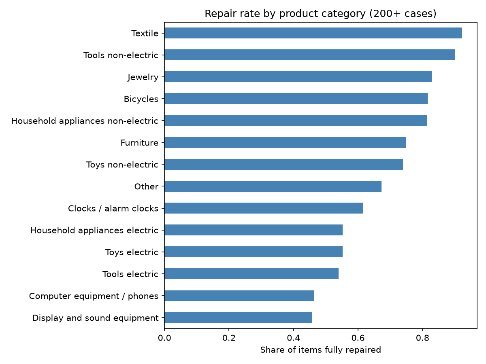
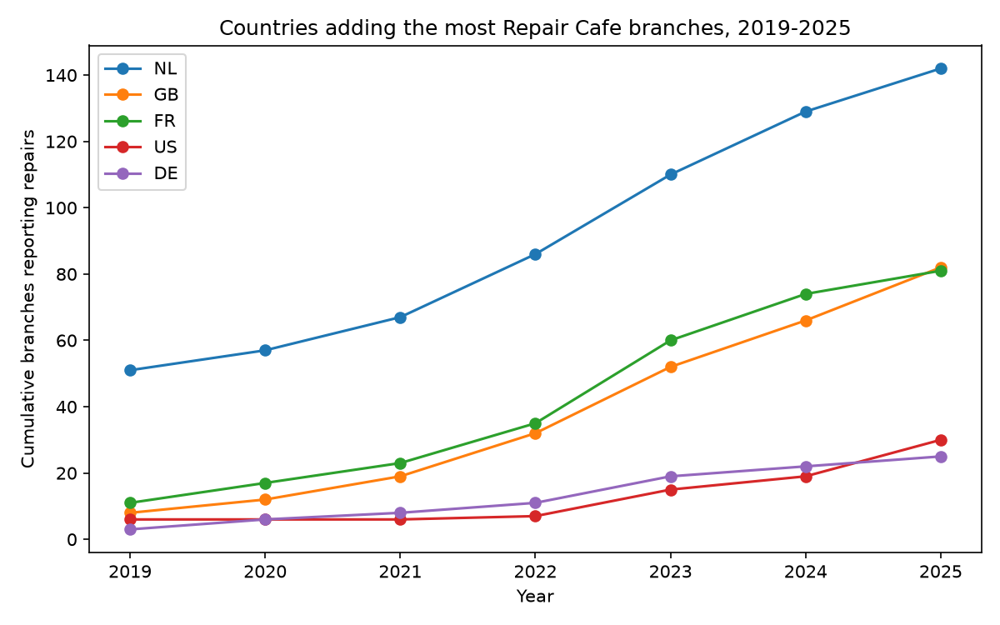

# Repair Cafes Worldwide TidyTuesday 2026-04-07 Philip & Kandra --- ## The data - Repair Monitor: repairs logged by Repair Cafes worldwide - 178,749 repair cases from 25 countries - Each row is one repair attempt: product, category, country, repaired or not, repairability (1-10) --- ## Q1: What kinds of items are most easily repaired? <p></p> --- ## Q1 findings - Overall, 63% of items were fully repaired - **Easiest categories:** Textile (92%), Tools non-electric (90%), Jewelry (83%) - **Hardest categories:** Tools electric (54%), Computer equipment / phones (46%), Display and sound equipment (46%) - **Easiest products:** Chisel (99%), Pyjamas (98%), Towel (98%) --- ## Q2: Which countries have seen the most growth in Repair Cafe branches? <p></p> --- ## Q2 findings: branches 2019 → 2025 - **NL**: 51 → 142 branches - **GB**: 8 → 82 branches - **FR**: 11 → 81 branches - **US**: 6 → 30 branches - **DE**: 3 → 25 branches --- ## Caveats - "Fully repaired" counts only items answered Yes, so partial repairs are not counted - Branch counts reflect branches that logged repairs, not every Repair Cafe that exists - Correlation only: we describe patterns, not causes --- ## Explore it yourself - Website: philipc22.github.io/tidytuesday-repair-cafes - Code: github.com/philipc22/tidytuesday-repair-cafes